DJ sets & VJ performances
Run visuals alongside your mix, show them fullscreen, or send them through Spout to apps such as Resolume, NestDrop, TouchDesigner and Synesthesia.
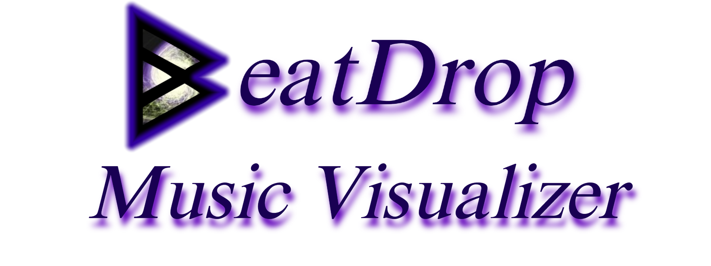
Free & open source · For Windows
BeatDrop is a free, standalone MilkDrop music visualizer for Windows. Use it for DJ sets, VJ performances, streams, music videos, parties, karaoke—or just enjoy the visuals while you listen.
Reacts to system audio or a microphone. No specific music player is required.
What can I use BeatDrop for?
Run it on its own or add its output to your existing visual setup. Choose presets that fit your music and the occasion.
Run visuals alongside your mix, show them fullscreen, or send them through Spout to apps such as Resolume, NestDrop, TouchDesigner and Synesthesia.
Bring BeatDrop into OBS with a Spout plug-in or window capture. Combine it with other sources for livestreams, recordings and music videos. If you share your visuals, tag #BeatDrop or #BeatDropMusicVisualizer so the community can find them.
Show visuals on a party screen and add synchronized lyrics when available. Use microphone input when you want the visuals to react to sound in the room.
Listen with your usual player, keep a small borderless view open, or use Desktop Mode to display visuals behind your Windows icons.
Use fullscreen visuals on a dedicated display, or route the output into a Spout-compatible setup for an installation or exhibition.
Edit .milk presets, experiment with shapes and waves, and use mouse, keyboard, shader variables, video or GIF textures in your work. Press M to get started.
See what it can do
Browse these screenshots to see some of the included MilkDrop presets. The captions name the presets and their creators.
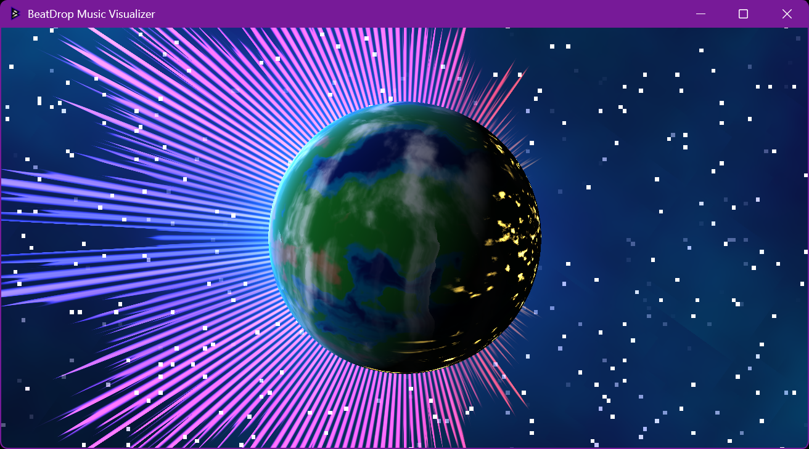
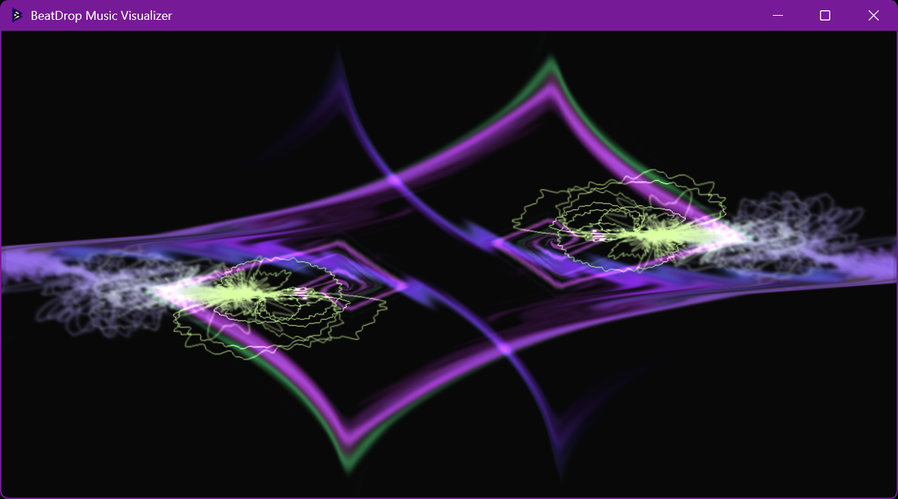
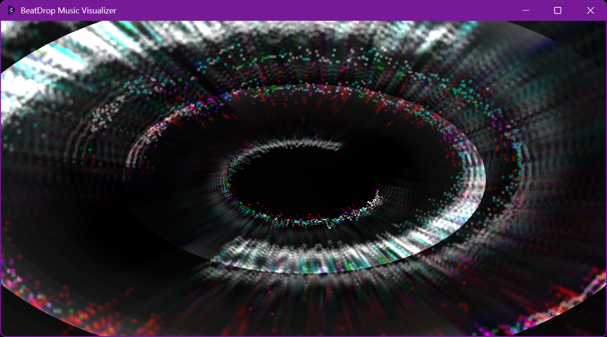
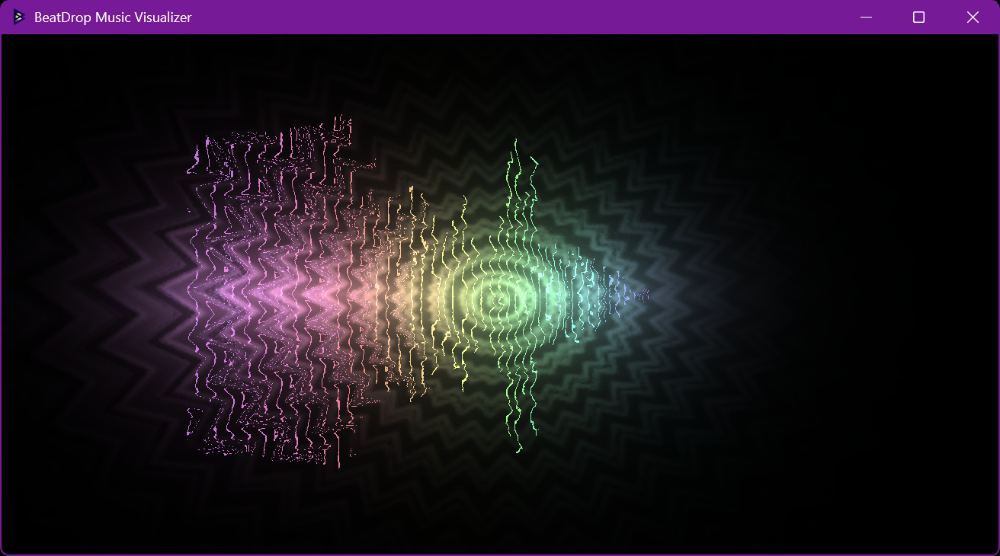
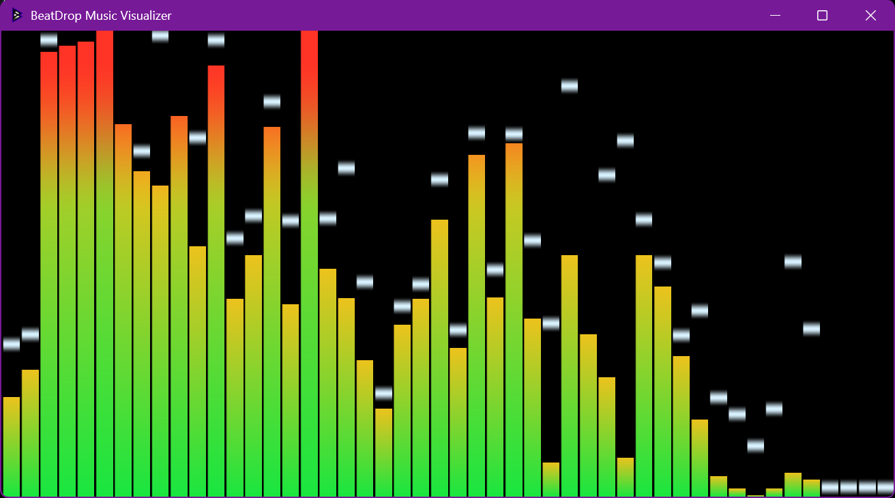
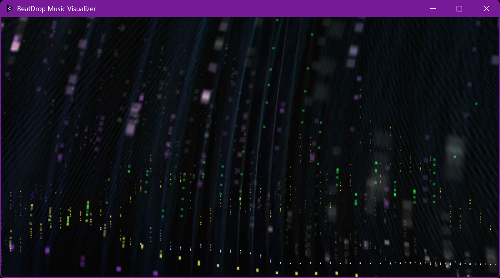
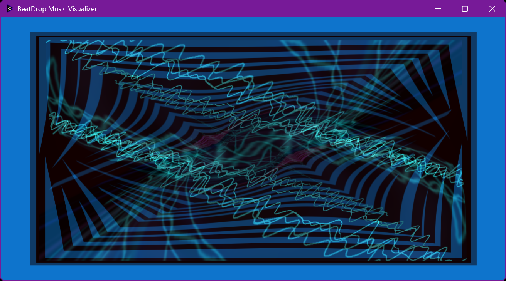
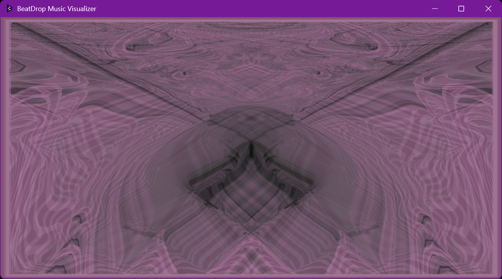
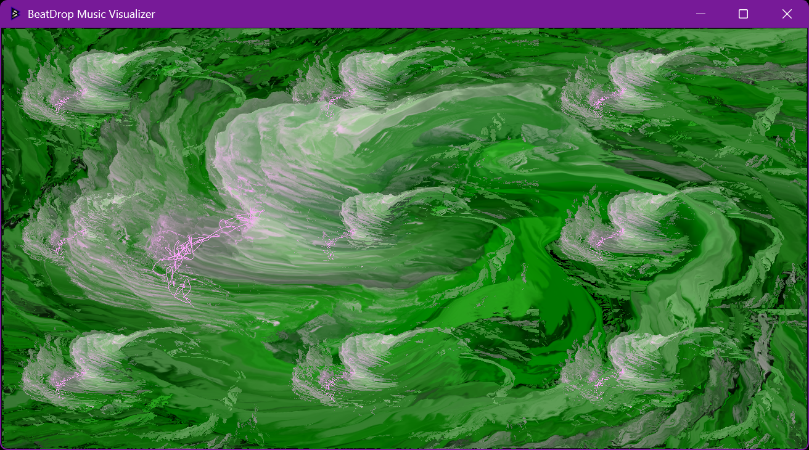
Visuals by the MilkDrop preset community. Read about permissions for public use
More ways to enjoy MilkDrop
Enjoy the presets as they are, or experiment with window modes, media inputs and the built-in editor.
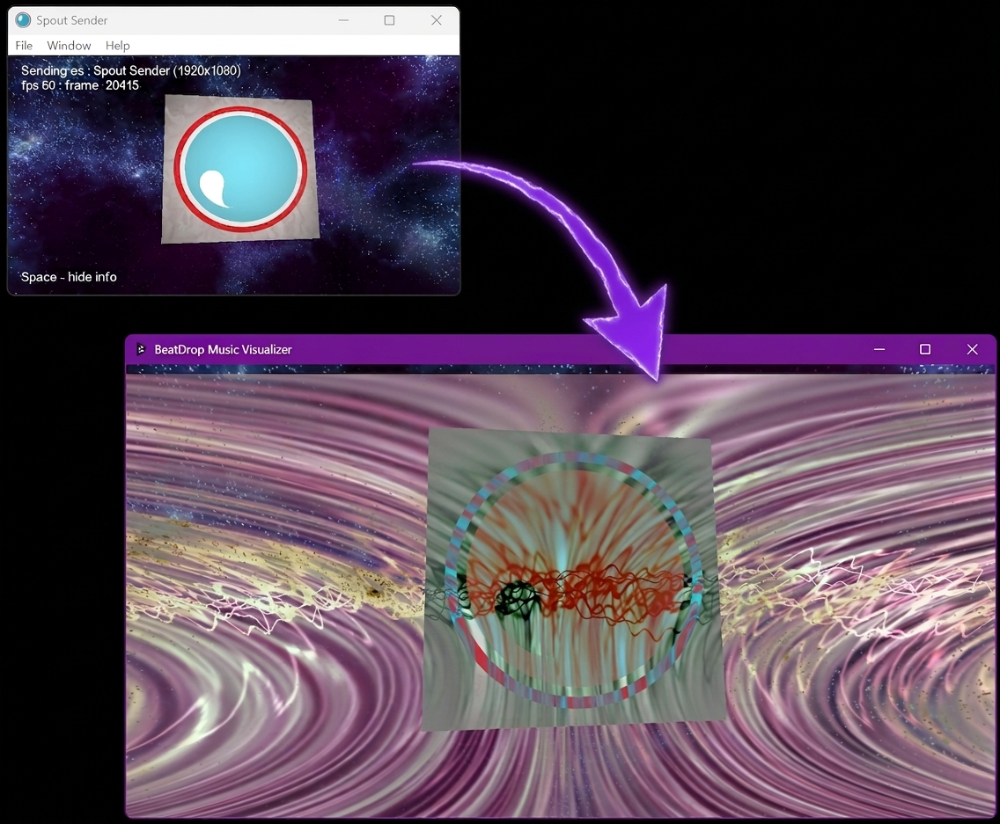
Spout · Video · GIFs
Send the visualizer’s output to Spout-compatible apps such as OBS, Resolume, NestDrop, TouchDesigner, Synesthesia etc. You can also bring a Spout feed as a sprite by putting Spout/ or Spout\ prefixes, along with the sender name to your image path from your beatdrop_img.ini file, or add GIFs and videos as sprites and textures. Presets will automatically load GIFs and videos if available.
OBS requires a Spout plug-in. Check preset permissions before using visuals in a stream or performance.
Explore media and Spout support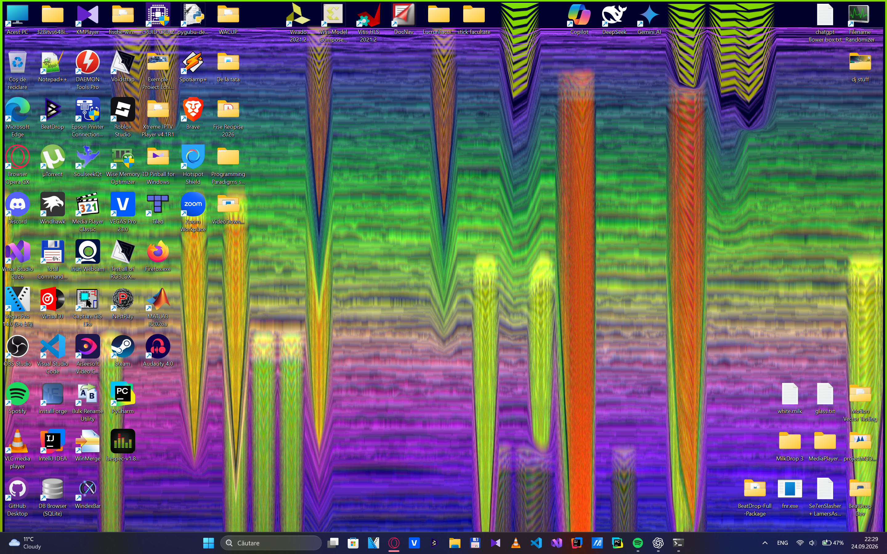
Desktop · Borderless · Fullscreen
Fill your screen, place a borderless window beside your music player, or put the visualizer on your desktop. Use the view that suits your desktop, recording or performance setup.
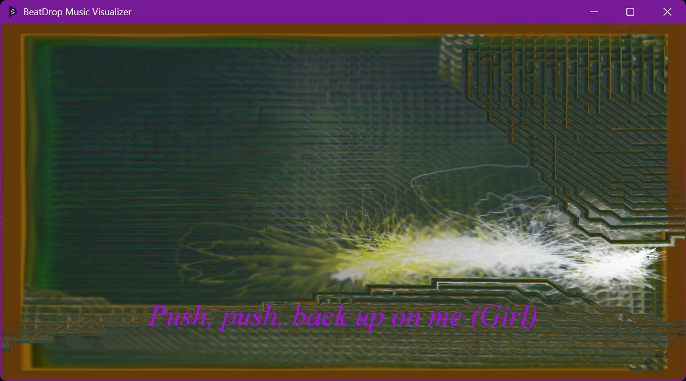
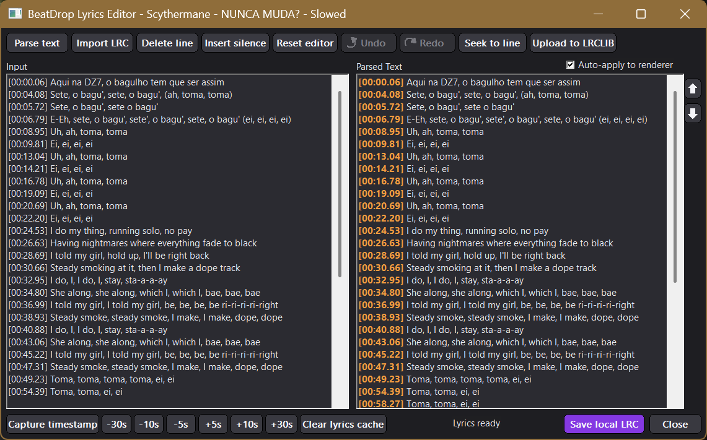
Song information · Synchronized lyrics
BeatDrop can show the current track and timed LRC lyrics over the visuals. On standard Windows 10 and newer builds, it follows the supported media session’s playback position to select each lyric line. Matching lyrics can be fetched from LRCLIB in the background and cached on your PC for later use.
Song information and playback timing depend on a supported Windows media session. Older Windows builds keep the lyrics editor and local cache, but do not provide automatic media-session timing.
Press Ctrl + Shift + E to open the editor—even while a BeatDrop menu is open. Import an LRC file, or type plain lyrics and choose Parse text to create editable lines.
Play the song and press Space or Capture timestamp to time the selected line. Use the seek buttons to check a line against the song, nudge timestamps by seconds, reorder lines, or insert silence. Undo and redo keep up to 100 editing steps.
The parsed pane previews what BeatDrop will render. Keep Auto-apply to renderer enabled to preview changes on the visualizer; save a local LRC when you are done. If you choose Upload to LRCLIB, the editor asks before publishing the track details and lyrics to its public service.
You can delete a selected line, reset the editor, or clear the local lyrics cache. The cache action asks before deleting its saved LRC files.
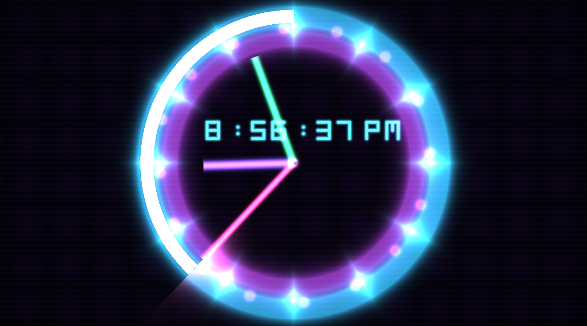
New shader variables · System clock
Presets can read the current local time and date while they run. Use the individual values—hour, minute, second, milliseconds, totalseconds, year, month, day and weekday—or the shader vectors sysTime and sysDate.
sysTime contains hour, minute, second and total seconds. sysDate contains year, month, day and weekday (1 = Monday through 7 = Sunday). Separate sysTimeHour, sysTimeMinute, sysTimeSecond, sysTimeTotalSeconds, sysDateYear, sysDateMonth, sysDateDay and sysDateWeekday values are available too.
New shader functions · FFT · Wave
BeatDrop adds MilkDrop 3-inspired FFT functions for reading frequency levels and peak holds: get_fft(), get_fft_hz(), get_fft_peak() and get_fft_peak_hz(). A normalized position runs from the lowest frequency (0) to about 22 kHz (1); the other functions read a frequency in hertz.
Wave functions give a preset the mono waveform or an individual channel: get_wave(), get_wave_left() and get_wave_right(), each read at a normalized position from 0 to 1. Use them to draw lines, bars, rings and other audio-reactive effects. The examples rotate automatically every 4.5 seconds with a gentle fade.
FFT functions are inspired by MilkDrop 3; BeatDrop also adds its mono and left/right waveform functions. FFT uses RMS normalization with smooth attack and decay; press M in the preset editor to adjust both from 0 to 1. The shader reference notes that using frac() with these functions may cause errors.
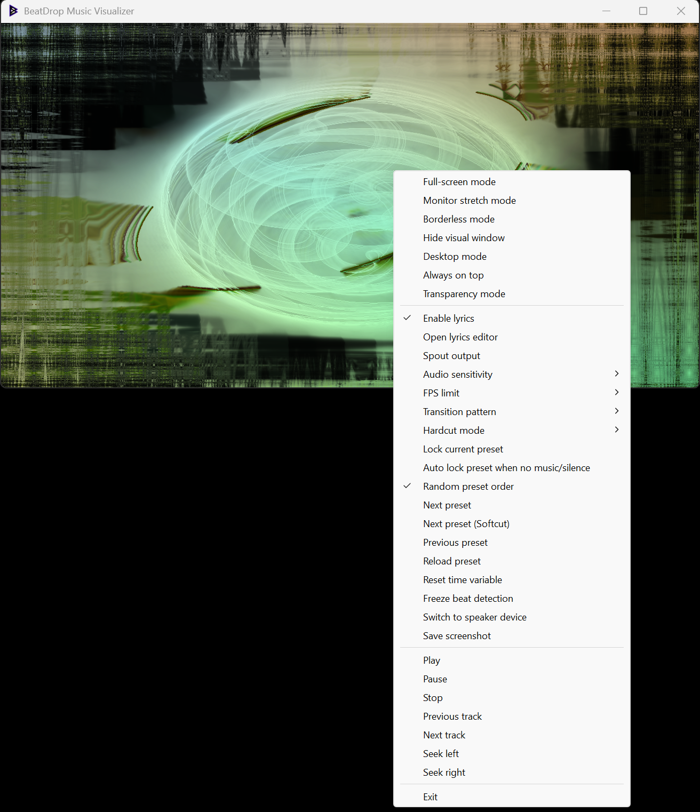
Menu · Playback controls
Right-click the visualizer, or right-click BeatDrop’s icon in the taskbar tray, to open its menu. Change display options, adjust audio and lyrics, manage presets, or control music playback from there.
For keyboard control, use these shortcuts while BeatDrop is active. The arrow keys seek through the current track.
Load .milk presets with drag and drop. Edit up to 16 custom shapes and waves, with new waveforms, code and shader variables to experiment with.
Precache shaders or let them cache as you go. Cached shaders reduce compilation waits when you revisit a preset.
Capture system sound or switch to a microphone. BeatDrop follows default audio-device changes and supports high sample rates.
Ready when you are
Choose a build for your computer and start using BeatDrop for your music, recordings or live visuals.
Get BeatDrop for WindowsAll releases & release notesGetting started
Use the release package and keep its resource folders together. You don’t need to compile the source code.
Choose either the installer or portable package from the latest release. If you choose portable, extract the full archive and keep BeatDrop Resources beside the executable.
Start the matching executable, then play audio in Spotify, YouTube, VLC, Winamp, WACUP or another app. BeatDrop listens to system audio by default; you do not need to install Winamp or WACUP specifically.
Use the preset browser (L) or drop a .milk file into the visualizer. Press F1 for the full list of controls and shortcuts.
Need a hand? Check the README for setup details and runtime requirements.
Read the guideFrequently asked questions
Get the latest package from GitHub Releases. Under the release’s Assets, choose the installer or portable package for your Windows system; the “Source code” archives are for developers. Run the installer, or extract the portable package and keep the complete folder—including BeatDrop Resources—together. Then start the matching BeatDrop executable. Check the release notes and runtime requirements if Windows reports a missing dependency.
Yes. BeatDrop can provide audio-reactive visuals for DJ sets and VJ performances, either fullscreen or through Spout in compatible apps. Capture your mix through system audio, or select microphone input for an external audio source. Make sure the audio reaches the selected input and check your routing before a show. For paid performances, streams and other public uses, check the licenses of the presets and media you plan to use.
There is no native Linux build. You can try running the Windows version through Wine, using tools such as Winetricks for dependencies or Lutris to manage the setup. Graphics and audio configuration depend on your machine, so compatibility is not guaranteed.
Incubo_ has also run BeatDrop in Winlator on Android using Turnip Vulkan, Zink OpenGL, DXVK + VKD3D and PulseAudio settings. This is a reported working configuration, not a requirement for every Linux or Android device. BeatDrop uses Direct3D 9, which DXVK can translate to Vulkan; VKD3D is not required for its Direct3D 9 renderer.
Desktop Mode and Windows media-session features (including automatic track information and playback timing used by synchronized lyrics) did not work in the reported Wine-based setup. Use windowed or fullscreen mode and expect some Windows-specific features to be unavailable. See the Lutris overview for more about its Wine support.
No. BeatDrop captures Windows system audio, so any app that plays sound can provide the music. Winamp, WACUP or any media players are optional; install or use one only if you want it as your player.
Yes. Press Ctrl + D, or use the context menu, to switch between speaker capture and microphone input.
BeatDrop’s official releases target Windows, and compatibility with Parallels or Prism has not been confirmed. MilkDrop2077 has reported running MilkDrop 3 on an M3 Mac with Parallels or in a Windows 11 ARM virtual machine with Prism; that report is about MilkDrop 3 rather than BeatDrop. Graphics and performance may vary with the Mac, virtual machine and graphics setup. A community macOS port is maintained separately and may produce different graphics or behavior.
Permissions depend on the presets you use. Some carry noncommercial restrictions, and credit alone does not grant permission. Read the preset permissions below and check the original author’s terms for your intended use.
Support independent development
BeatDrop is free to download and developed independently. If it has been useful for your DJ or VJ sets, streams, events or everyday listening, you can support the project with a Ko-fi donation. Contributions help cover hosting and development tools and leave more time for fixes and new features.
Support is optional. BeatDrop remains free to download, and a donation does not change the permissions for presets or other media.
An ongoing community project
Have a question, found a bug, or made something with BeatDrop? Join the Discord, open an issue on GitHub, or email beatdropmusicvisualizer@gmail.com. Preset contributions, feature requests and improvements are welcome.
{kind=link}
{kind=link}
{kind=link}
{kind=link}
{kind=link}
{kind=link}
{kind=link}
{kind=link}
{kind=link}
{kind=link}